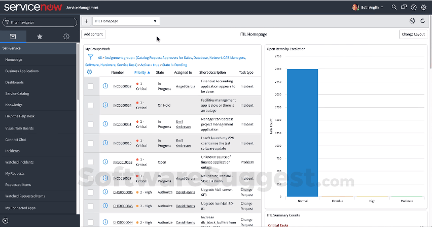
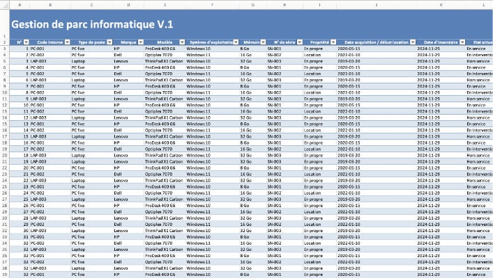
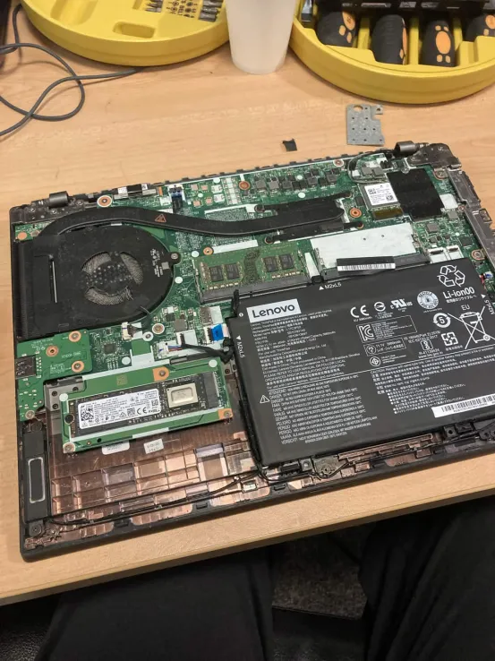
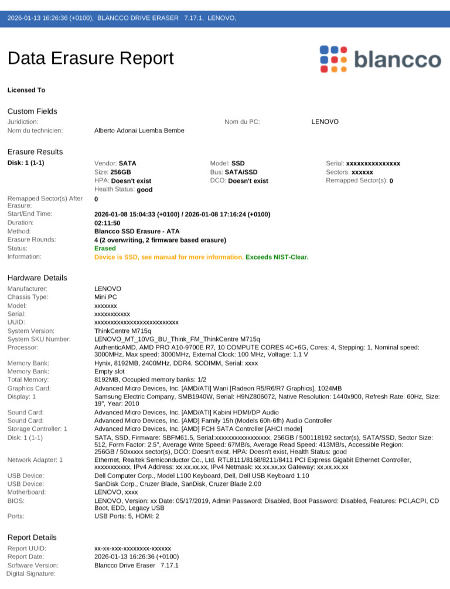
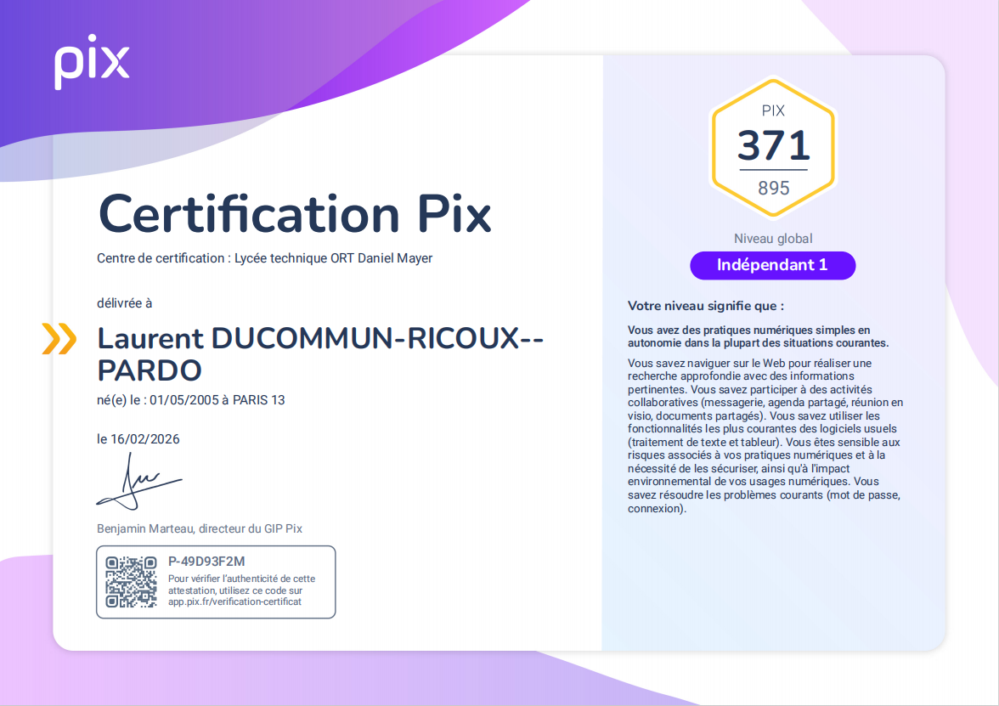

Expériences & Projets
Présentation de mon parcours professionnel et de mes réalisations académiques.
Stage — FRAIKIN France
19 Mai 2024 — 2 Juillet 2024
Stage réalisé au sein du service informatique de l'entreprise FRAIKIN, spécialisée dans la location de véhicules industriels.
📋 Identification de l'entreprise
📜 Historique
FRAIKIN a été fondée en 1944 en France. L'entreprise s'est progressivement développée pour devenir un acteur majeur de la location de véhicules industriels, utilitaires et commerciaux en Europe. Aujourd’hui, FRAIKIN est présent dans plusieurs pays et propose des solutions de gestion de flotte adaptées aux besoins des entreprises.
🔒 Politique RGPD
FRAIKIN applique les réglementations du RGPD en assurant la protection des données personnelles de ses clients et collaborateurs. Cela inclut la sécurisation des systèmes informatiques, la gestion des accès, ainsi que la sensibilisation des employés aux bonnes pratiques en matière de cybersécurité.
🎯 Orientations stratégiques
L'entreprise vise à renforcer sa position sur le marché européen de la location de véhicules industriels en développant des solutions innovantes, notamment dans la gestion de flotte connectée et les véhicules écologiques. FRAIKIN met également l’accent sur la digitalisation de ses services et l’amélioration de l’expérience client.
🌿 Responsabilité Sociétale des Entreprises (RSE)
FRAIKIN s’engage dans une démarche de responsabilité sociétale en développant des solutions de mobilité durable, notamment avec l’intégration de véhicules électriques et moins polluants. L’entreprise met également en place des actions pour réduire son impact environnemental et améliorer les conditions de travail de ses collaborateurs.
📊 Analyse SWOT
- Leader européen de la location de véhicules industriels
- Large flotte de véhicules
- Présence internationale
- Expertise reconnue dans la gestion de flotte
- Coûts élevés de maintenance
- Dépendance au secteur du transport
- Infrastructure lourde à gérer
- Développement des véhicules électriques
- Digitalisation des services
- Croissance du e-commerce et du transport
- Concurrence accrue
- Réglementations environnementales strictes
- Fluctuation des prix du carburant
🏢 Organigramme
Missions réalisées
🎫 Gestion des incidents et tickets
Intervention physique ou à distance pour la résolution des incidents et tickets utilisateurs.
Compétence acquise : Gestion des incidents, support utilisateur

📦 Réalisation d'un inventaire
Inventaire du matériel informatique (ordinateurs, imprimantes, équipements réseau).
Compétence acquise : Gestion des actifs informatiques, organisation

🔧 Réparation de PC et appareils électroniques
Diagnostic et réparation d'ordinateurs et autres appareils électroniques故障.
Compétence acquise : Maintenance hardware, diagnostic

💻 Remasterisation de postes
Remasterisation et configuration de PC, téléphones et iPad pour les nouveaux utilisateurs.
Compétence acquise : Déploiement système, configuration

🐳 Virtualisation Docker - Monitoring
Formation et déploiement d'une plateforme de monitoring open source avec Docker (Grafana, Loki, Prometheus).
Compétence acquise : Docker, administration systèmes, supervision

Stage — CNDA (Cour Nationale du Droit d'Asile)
Janvier 2025 — Avril 2025
Stage realizado au sein du service informatique de la CNDA, juridiction administrative spécialisée dans l'examen des recours contre les décisions de l'Office Français de Protection des Réfugiés et Apatrides (OFPRA).
📋 Identification de l'entreprise
📜 Historique
La Cour Nationale du Droit d'Asile (CNDA) a été créée en 2015, à la suite de la réforme du droit d'asile. Elle est Issue de la transformation de la Commission de Recours des Réfugiés (CRR). La CNDA est compétente pour connaître des recours contre les décisions de l'OFPRA rendues en matière de protection internationale (statut de réfugié, protection subsidiaire) et de protection temporaire.
🔒 Politique RGPD
En tant que juridiction administrative, la CNDA est soumise aux obligations du RGPD et doit garantir la protection des données personnelles desdemandeurs d'asile, souvent des personnes vulnérables. Cela inclut la sécurisation des dossiers juridiques, le contrôle des accès aux données sensibles, et la formation des agents aux bonnes pratiques de confidentialité.
🎯 Orientations stratégiques
La CNDA vise à améliorer l'accès à la justice pour lesdemandeurs d'asile en modernisant ses services, en accélérant les procédures et en formant les agents. Elle s'engage également dans la digitalisation des procédures et le renforcement de la sécurité des systèmes d'information.
🌿 Responsabilité Sociétale des Entreprises (RSE)
En tant qu'établissement public, la CNDA s'inscrit dans une démarche de responsabilité sociétale en favorisant l'insertion professionnelle, en accueillant des stagiaires et en promouvant l'égalité des chances. L'institution veille également à réduire son impact environnemental et à garantir l'accessibilité de ses services.
📊 Analyse SWOT
- Expertise juridique reconnue
- Indépendance judiciaire
- Formation continue des agents
- Accès aux données de l'OFPRA
- Delais de traitement parfois longs
- Volume important de recours
- Ressources humaines limitées
- Digitalisation des procédures
- Renforcement de la coopération européenne
- Nouvelles technologies pour la sécurité
- Augmentation des flux migratoires
- Réformes législatives
- Cyberattaques ciblant les données sensibles
🏢 Organigramme
Missions réalisées
🖥️ Installation & configuration postes Windows 11
Installation et configuration de postes de travail sous Windows 11 pour les nouveaux agents.
Compétence acquise : Déploiement Windows, configuration système

🔄 Masterisation & reconditionnement
Masterisation et reconditionnement de postes informatiques pour le renouvellement du parc.
Compétence acquise : Image système, déploiement, maintenance
🛡️ Effacement sécurisé des données Blancco
Effacement sécurisé des données avec le logiciel Blancco Drive Eraser avant recyclage du matériel.
Compétence acquise : Sécurité des données, conformité RGPD

📱 Inventaire des téléphone
Inventaire complet de tous les téléphones mobiles de l'entreprise pour le suivi des actifs.
Compétence acquise : Gestion des actifs, inventaire, organisation

Infrastructure Réseau
Mise en place d'un réseau local avec configuration des adresses IP, gestion des postes clients et tests de connectivité.
Technologies : Réseau LAN, IPv4
Compétences développées : configuration réseau, diagnostic de connexion, organisation d'une infrastructure locale.

Installation Système Windows
Installation et configuration d'un serveur Windows avec gestion des utilisateurs et des droits d'accès.
Technologies : Windows Server
Compétences développées : administration système, gestion des utilisateurs, sécurisation des accès.

Initiation Cybersécurité
Analyse des vulnérabilités d’un système informatique et mise en place de bonnes pratiques de sécurité.
Technologies : Outils d'analyse sécurité
Compétences développées : identification des risques, sensibilisation sécurité, protection des systèmes.
Certifications
PIX
